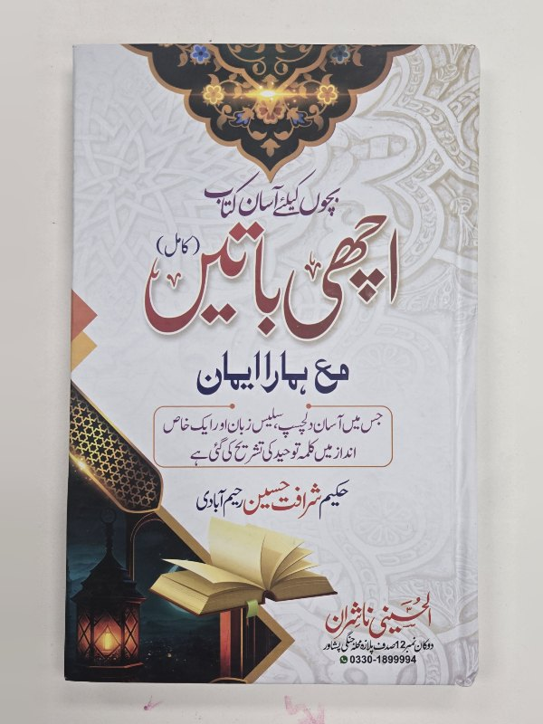

← Home
Bookstore
TODO: A line about the bookstore: what it stocks, and where and when the books can be bought.

Urdu
Achchhī Bāteṉ
The first Urdu reader of the course. Short lessons on good manners and conduct teach students to read Urdu and give them its basic words and grammar.
Year I
$6.00
View the book